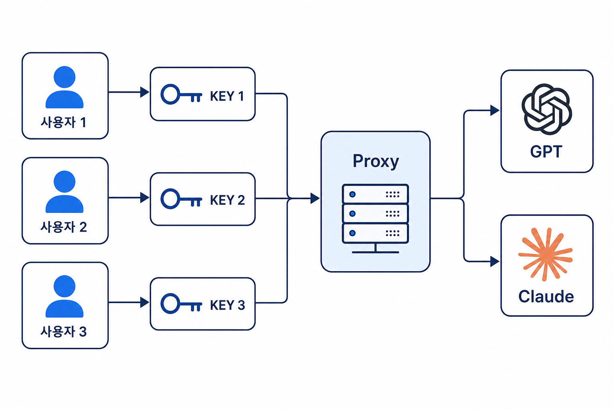

Proxy
업무용 프로그램에서 사용하는 LLM API입니다.
- Anthropic Python SDK로 Claude 계열 모델을 호출할 수 있습니다.
- OpenAI Python SDK로 GPT 계열 모델을 호출할 수 있습니다.
- 기존 코드에서
base_url과api_key만 바꾸어 연결합니다.
개요

강남대성수능연구소에서 사용되는 업무용 AI 프로그램은 별도의 OpenAI/Anthropic API Key가 없이도, Proxy API를 통해 LLM을 호출할 수 있습니다.
API 사용법
OpenAI GPT
1. 설치
pip install openai2. Client 설정
https://kdsnr-ai-main-223982025046.asia-northeast3.run.app/proxy/v1위의 주소를 OpenAI의 base_url에, Dashboard에서 발급한 API Key는 api_key에 입력합니다.
import os
from openai import OpenAI
from openai.types.chat import ChatCompletion
client = OpenAI(
base_url="https://kdsnr-ai-main-223982025046.asia-northeast3.run.app/proxy/v1",
api_key=os.environ["KDSNR_API_KEY"],
)
completion: ChatCompletion = client.chat.completions.create(
model="gpt-5.6-terra",
messages=[
{
"role": "user",
"content": "안녕하세요",
}
],
)
print(completion.choices[0].message.content)구체적인 API 사용법은 공식 홈페이지를 참고하세요.
Anthropic Claude
1. 설치
pip install anthropic2. Client 설정
https://kdsnr-ai-main-223982025046.asia-northeast3.run.app/proxy위의 주소를 Anthropic의 base_url에, Dashboard에서 발급한 API Key는 api_key에 입력합니다.
import os
from anthropic import Anthropic
from anthropic.types import Message
client = Anthropic(
base_url="https://kdsnr-ai-main-223982025046.asia-northeast3.run.app/proxy",
api_key=os.environ["KDSNR_API_KEY"],
)
message: Message = client.messages.create(
model="claude-opus-5",
max_tokens=1024,
messages=[
{
"role": "user",
"content": "안녕하세요",
}
],
)
print(message.content[0].text)구체적인 API 사용법은 공식 홈페이지를 참고하세요.